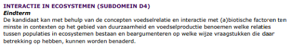
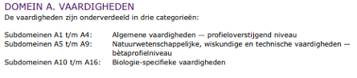

Vertaalverslag.
In deze blog zal ik jullie op de hoogte houden van mijn ervaringen met blended learning tijdens de biologieles. De ontworpen lessenserie is gemaakt voor een havo klas die het onderwerp symbiose behandelen. Dit onderwerp is onderdeel van het eindexamen HAVO dat valt onder het sub-domein interactie in ecosystemen:
 (Syllabus centraal examen 2024 Biologie HAVO)
Het onderwerp symbiose is ook onderdeel van het eindexamen VWO en valt onder het sub-domein regulatie van ecosystemen in het domein populatie- en ecosysteemniveau.
Dit domein is complexer dan dat voor HAVO waardoor symbiose maar een klein onderdeel vormt.
Bij zowel havo als ook vwo worden in het domein populatie- en ecosysteem niveau interactie en regulatie van ecosystemen en de vorming van soorten besproken.
Waar in de syllabus van havo alle 3 de onderwerpen even groot zijn, gaat de syllabus van VWO juist veel dieper in op het onderwerpen zoals regulatie van ecosystemen.
Dit betekend dat VWO leerlingen meer en complexere onderwerpen moeten leren. Daarom zal het onderwerp van de lessenserie moeten worden aangepast.
(Syllabus centraal examen 2025 Biologie VWO)
Een mogelijk nieuw onderwerp voor de lessenserie zou energiestroom kunnen zijn uit het sub domein regulatie van ecosystemen. De leerlingen moeten volgens de syllabus 4 leerdoelen kunnen (zie hierboven):
- Energiestromen in een ecosysteem beschrijven
- Toelichten welke processen en organismen van invloed zijn op energiestromen in een ecosysteem
- Uitleggen wat oorzaken en gevolgen zijn van verstoringen en van energiestromen
- Beredeneren hoe de mens ecosystemen positief of negatief kan beïnvloeden met keuzes op het gebied van energiegebruik
De eerste 2 doelen vormen een basis en kunnen al worden besproken tijdens de lessen . De laatste twee kunnen door leerlingen zelf worden onderzocht en door middel van de documentaire worden voorgesteld. De leerlingen worden in verschillende groepen opgedeeld en elke groep krijgt een ander onderwerp over de verstoring van energiestromen (zoals klimaatverandering, overbevissing, ontbossing, oceaan verzuring). De opdracht om een documentaire te maken blijft hetzelfde als bij de havo leerlingen. Hierdoor blijven de volgende leerdoelen behouden:
- De leerlingen kunnen hun eigen en resultaten van medescholieren evalueren en van feedback voorzien
- De leerlingen kunnen een eigen documentaire ontwerpen en hierin de door hun toegewezen vorm van symbiose uitleggen met behulp van voorbeelden.
Door het onderwerp aan te passen wordt er van de leerlingen een hoger denkniveau gevraagd. De leerlingen moeten niet alleen maar onderzoek doen naar hun onderwerp en dit uitleggen maar worden nu ook gevraagd hun resultaten toe te lichten en te beredeneren. Hierdoor worden ook hun vaardigheden (zowel algemeen, wetenschappelijk en biologisch specifiek) verbeterd. Deze vaardigheden zijn daarnaast ook onderdeel van de examensyllabus.
 (Syllabus centraal examen 2025 Biologie VWO)
Hoe de verschillende leerdoelen gebruik maken van verschillende vaardigheden is te zien in de tabel hieronder:
| Vaardigheden | Leerdoel | |||||
|---|---|---|---|---|---|---|
| Algemene vaardigheden | 1 | 2 | 3 | 4 | 5 | 6 |
| Informatievaardigheden gebruiken kandidaat kan doelgericht informatie zoeken, beoordelen, selecteren en verwerken |
x | x | x | x | ||
| Communiceren De kandidaat kan adequaat schriftelijk, mondeling en digitaal in het publieke domein communiceren over onderwerpen uit het desbetreffende vakgebied. |
x | x | ||||
| Reflecteren op het leren De kandidaat kan bij het verwerven van vakkennis en vakvaardigheden reflecteren op eigen belangstelling, motivatie en leerproces. |
x | x | ||||
| Natuurwetenschappelijke, wiskundige en technische vaardigheden | ||||||
| Onderzoeken De kandidaat kan in contexten vraagstellingen analyseren, gebruikmakend van relevante begrippen en theorie, vertalen in een vakspecifiek onderzoek, dat onderzoek uitvoeren, en uit de onderzoeksresultaten conclusies trekken. De kandidaat maakt daarbij gebruik van consistente redeneringen en relevante rekenkundige en wiskundige vaardigheden. |
x | x | x | x | x | |
| Ontwerpen De kandidaat kan in contexten op basis van een gesteld probleem een technisch ontwerp voorbereiden, uitvoeren, testen en evalueren en daarbij relevante begrippen, theorie en vaardigheden en valide en consistente redeneringen hanteren. |
x | x | x | x | x | |
| Modelvorming De kandidaat kan in contexten een relevant probleem analyseren, inperken tot een hanteerbaar probleem, vertalen naar een model, modeluitkomsten genereren en interpreteren, en het model toetsen en beoordelen. De kandidaat maakt daarbij gebruik van consistente redeneringen en relevante rekenkundige en wiskundige vaardigheden. |
x | x | ||||
| Waarderen en oordelen De kandidaat kan in contexten een beargumenteerd oordeel geven over een situatie in de natuur of een technische toepassing, en daarin onderscheid maken tussen wetenschappelijke argumenten, normatieve maatschappelijke overwegingen en persoonlijke opvattingen |
x | |||||
| Biologie-Specifieke Vaardigheden | ||||||
| Vorm-functie denken De kandidaat kan in contexten redeneringen hanteren waarbij van biologische objecten op verschillende organisatieniveaus vanuit een gegeven vorm naar een bijbehorende functie wordt gezocht en andersom. |
x | |||||
| Ecologisch denken De kandidaat kan in contexten op het gebied van duurzaamheid redeneringen hanteren waarbij uitgewerkt wordt wat de gevolgen van interne of externe veranderingen in een levensgemeenschap of ecosysteem zijn. |
x | x | x | |||
| Evolutionair denken De kandidaat kan in contexten redeneringen hanteren waarmee biologische verschijnselen op verschillende organisatieniveaus verklaard worden met behulp van theorie over evolutiemechanismen. |
x | x | x | |||
| Systeemdenken De kandidaat kan in contexten een onderscheid maken tussen verschillende organisatieniveaus, relaties binnen en tussen organisatieniveaus uitwerken en uiteenzetten hoe biologische eenheden op verschillende organisatieniveaus zichzelf in stand houden en ontwikkelen. |
x | x | ||||
| Kennisontwikkeling en- toepassing De kandidaat kan in contexten analyseren op welke wijze natuurwetenschappelijke en technologische kennis wordt ontwikkeld en toegepast |
x | x | x | |||
Uiteindelijk is het ook goed om de toetsing van de opdracht aan te passen. De leerlingen werken aan een groter en complexer ontwerp en de moeten veel meer vaardigheden leren. Daarom is het goed bij de toetsing vaardigheden als toepassen, analyseren en ontwerpen zwaarder te wegen dan het beschrijven en uitleggen van de theorie.